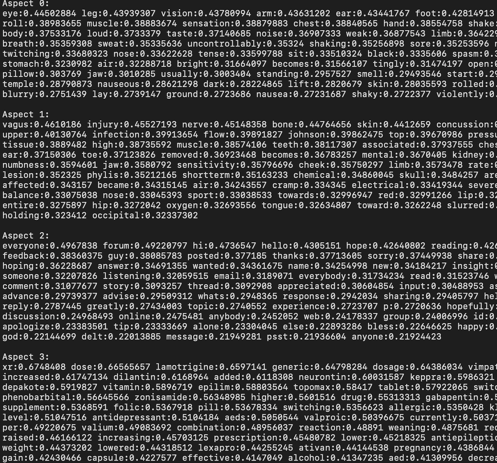
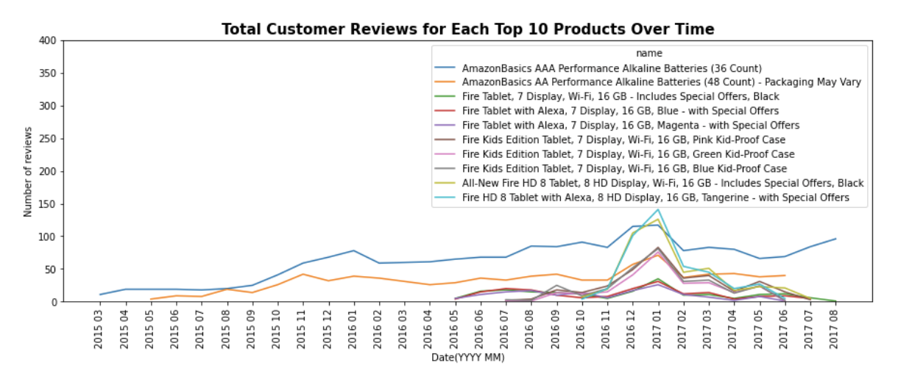
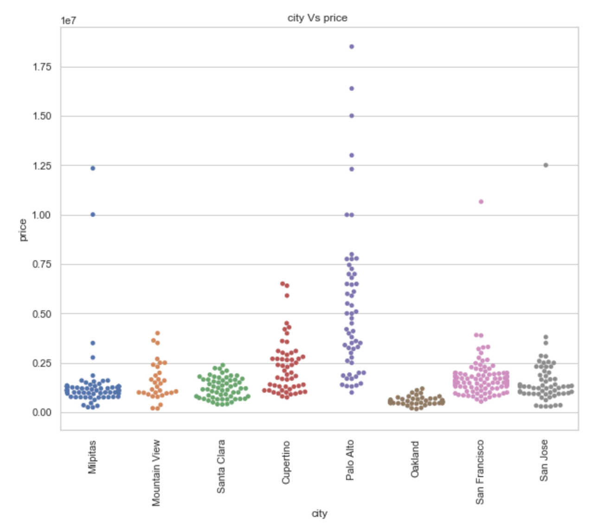
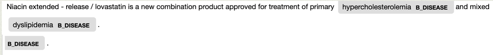

My name is Haripriya Kumar, and I'm a graduate student from the California state University - East Bay, pursuing Master's degree in Business Analytics. My interests range from data analysis to social issues. I am also passionate about building data driven solutions for social good.
When I’m not playing with data, I’m usually enjoy hiking or reading blogs. If you’d like to get in touch, feel free to connect with me through any of the social links below.

An unsupervised neural network approach to find the coherent aspect and
analyze the sentiments on epilepsy forum comments from patients using techniques in Attention mechanism, NLP, Keras and
Tensorflow.

Analyze the trend of the reviews over time, analyze the sentiments present in the reviews and the rating, and then further perform topic modeling on the customer reviews for the top three products
Models used: Seq2Seq Character level model, Seq2seq word level model, word model with attention
Models used: DNN, CNN, LSTM, BERT

How the COVID has affected the Bay Area real estate market ?
The objective is to Predict customers who purchase Caravan Insurance using Python, Tensorflow. The data consists of 86 variables and includes product usage data and socio-demographic data derived from zip area codes.

Identify disease entity in the clinical/ medical text from the BioBERT dataset.
Transfer learning by loading model from spaCy.
Analyze Netflix movie dataset, recommend relevant movies to the viewer based on correlation and collaborative filtering. Libraries used: dplyr, caret, forecast, tidyr, rpart, ggplot2